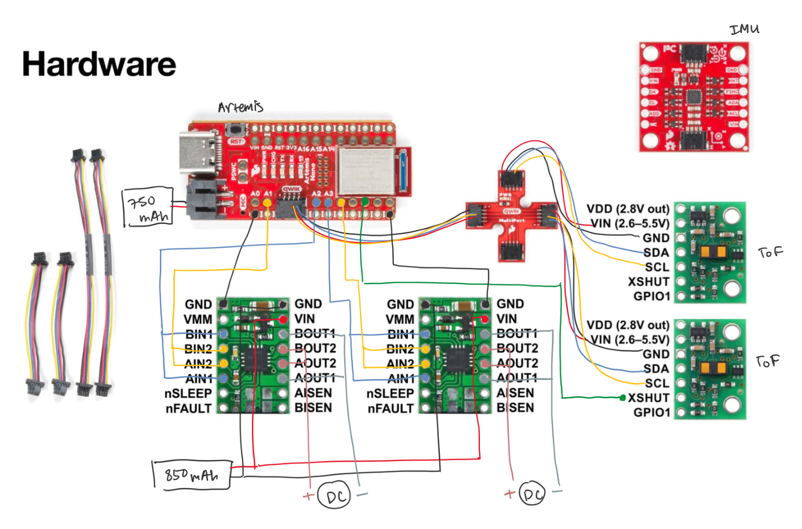

Lab 4: Motors and Open Loop Control
02.25.2025 - 03.04.2025
Setup
The objective of Lab 4 was to change from manual to open loop control of the car. To do so, I finished soldering and assembling hardware in the robot, adding on two motor drivers to the components done in past labs. I then wrote code to move the robot around to show an open loop system.
I started the lab by planning out how to wire the motor drivers. From the instructions, I knew that there would be connections between the Artemis, the motor drivers, and the 850 mAh battery. You can see my wiring diagram below.
The diagram includes the ToF and QWIIC connect connections from Lab 3, but the motor driver connections can be seen between the Artemis and the motor drivers on the bottom of the diagram. The VIN and GND pins were to be connected, and then connected to the battery. I chose four pins on the Artemis to connect my motor drivers to: A1, A2, A3, and A4. A1 connected to BIN2 and AIN2 of one of the drivers, and A2 was then connected to BIN1 and AIN1 of the same driver. A3 and A4 were connected similarly to the other driver. For each motor driver, BOUT1 and AOUT1 were connected to a negative motor lead, and BOUT2 and AOUT2 were connected to a positive motor lead. I connected pins together (ie AIN1 and BIN1) by soldering short wires into the pins; I then soldered them to another wire and put heat shrink over the exposed area.
Battery Discussion
The Artemis and motor drivers are powered from separate batteries. This is because the motor drivers and the Artemis have different power requirements and having separate batteries ensured that there is no disruption caused by a shared power supply. This way, using more power on the motor drivers won't affect the Artemis's power.
Power Supply and Oscilloscope
The first step was to connect one motor driver to the Artemis, and use the power supply and oscilloscope. To set this up, I soldered the motor driver's IN connections to the corresponding pins on the Artemis, as well as one of the GND pins. I used the oscilloscope to probe the OUT connections' signal. I then connected the VIN and the other GND pin to the power supply and set the voltage to 3.7V because that is what our battery provides. The motor driver has a range of 2.7V to 10.8V, so any value within that range would have worked. Below, you can see a picture of my set up.

In order to see the PWM signal on the oscilloscope, I wrote code that sent PWM signals using analogWrite().
void loop() {
analogWrite(3, 0);
for (int i = 0; i < 255; i++) {
analogWrite(3, i);
analogWrite(4, 0);
analogWrite(1, 255-i);
analogWrite(2, 0);
delay(10);
}
}
I captured the following image on the oscilloscope.

I also captured a video of the signal and the setup.
I then tested the other motor driver to confirm that both drivers were functional, which yielded the same results.
Spinning Wheels using Power Supply
The next step was to use the power supply and motor drivers to spin the robot's wheels. To do this, I opened the car up and removed the control PCB, cutting the wires between the board and motors as closely to the board as possible. I also removed the LEDs, as they will no longer be used. I then taped down the other hardware components to keep wires and parts from moving around. Below, you can see a picture of the emptied car with all of the hardware components taped in, except the motor drivers which had not yet been connected.

In order to test spinning the wheels, I had to connect the motor drivers to the motor rather than the oscilloscope. I focused on one of the motors first, soldering the OUT pins to the motor's positive and negative wires accordingly. I kept the same power supply setup and wrote code to spin the wheels forwards and backwards to ensure the motor was functional. I wrote some Arduino code to make the wheels spin forward and backward by switching which pin had the non-zero duty cycle.
void loop()
{
delay(1000);
analogWrite(1, 0);
analogWrite(2, 200);
analogWrite(3, 0);
analogWrite(4, 200);
delay(2000);
analogWrite(1, 0);
analogWrite(2, 0);
analogWrite(3, 0);
analogWrite(4, 0);
delay(1000);
analogWrite(1, 200);
analogWrite(2, 0);
analogWrite(3, 200);
analogWrite(4, 0);
delay(2000);
analogWrite(1, 0);
analogWrite(2, 0);
analogWrite(3, 0);
analogWrite(4, 0);
delay(1000);
}
I set the power supply voltage to 3.7V again to test one set of wheels, and then soldered the other motor driver to the other motor and tested that second set of wheels.
Next, I used the power supply to power both sets of wheels. Using the power supply's alligator clips, I clipped both VINs together, and both GNDs together.
Spinning Wheels using Battery
Next, I tested the motor drivers and wheels using the 850 mAh battery. To do this, I soldered the two VIN pins together with the battery's positive lead, and th etwo GND pins together with the battery's negative lead. Then, I connected my charged battery to the other end.
I first ran both sets of wheels independently to ensure that they were functional:
Next, I used the same code as above (spinning wheels with the power supply) to test spinning both wheels.
Assembling Car
After testing to make sure that my motors were all working correctly, I started to assemble all of my hardware inside of the car. Below, you can see a diagram of where every component is placed on the car.

As of this lab, everything is taped down. I made sure to tape down any wire or parts that were sticking out, but over iterations of testing, some wires would escape their binding. I also decided to put my ToF sensors on the front and back of the car, as I was slightly concerned by the possibility of the wheels causing disturbances in the sensor measurement if it was on the side. I put my Artemis and two motor drivers into the compartment that used to house the PCB board. For one of my motor drivers, I had used longer heat shrink, which caused issues when trying to fit all of wiring into the compartment.
PWM Testing
The next task was to explore the lower limits in PWM value for which the robot moved forward, overcoming the friction of the ground. To do this, I set the car at rest, and increased the PWM value incrementally by 10 until the robot started to move. I noted that the values ranged between 45-55 PWM, the value increasing as time went on. This could be due to using a fresh battery versus a worn one.
I also noticed that the range of 45-55 PWM was not enough to turn, as there is rotational friction to overcome in addition. The car started to turn from rest at ~100 PWM.
Calibration
After testing for the lower PWM limits, I moved on to calibrating the wheels. I first wrote some code to move forward and backward, with ample breaks so that I didn't have to chase the car down. I noticed that the car would turn to the left slightly when moving forwards. Below is a video of my car without calibration, where the slight turn can be seen.